Sede Lanús Oeste Centro • Carlos Tejedor 335
Escuela, Maestría, Cursos y Consultorio Terapéutico. Un refugio dedicado a la consciencia corporal, el movimiento profundo y el bienestar integral.
Ecosistema Integrado
Haz clic en cualquier propuesta para desplegar su imagen de fondo, resumen y acceder a su espacio web oficial.
Shiatsu Namikoshi & Anma • Gastón Burgos
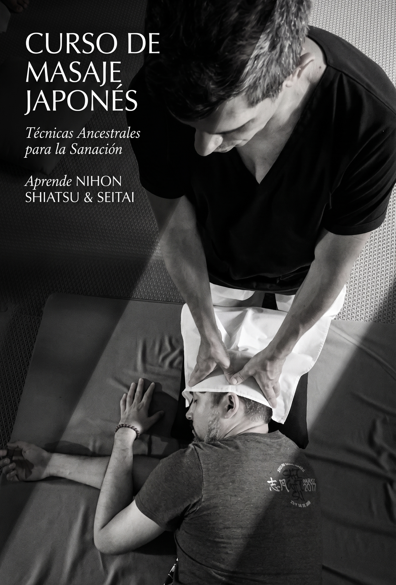
Terapia corporal basada en la presión digital sobre puntos neuromusculares para aliviar tensiones crónicas, reordenar el sistema nervioso y restaurar la energía vital.
Ingresar a Masaje JaponésFuerza & Rendimiento • Prof. Gastón Burgos
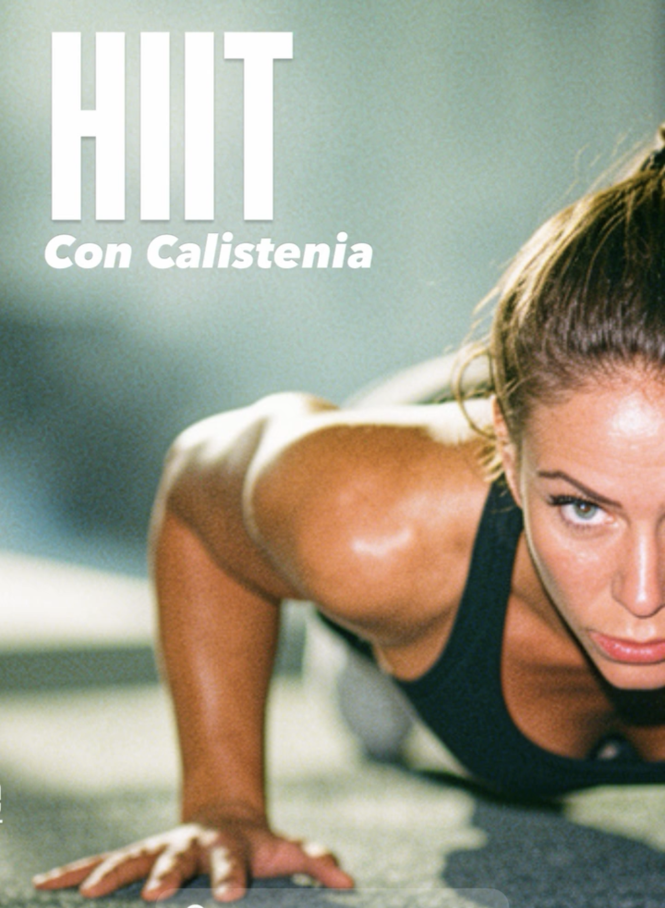
Fórmula de alta intensidad combinada con dominio del propio peso corporal. Fortalecimiento muscular, aceleración metabólica y corrección postural personalizada.
Ingresar a HIIT CalisteniaHatha, Terapéutico, Pre-Parto & Dinámico
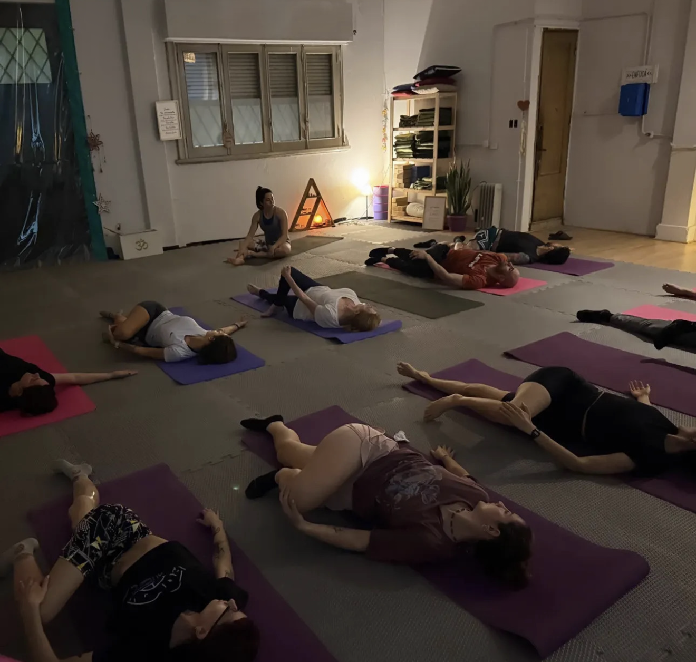
Diferentes enfoques adaptados a cada etapa de la vida: Yoga Pre-Parto con Lic. Obstetricia, Hatha con Profe Belén, Terapéutico con Profe Estefy e Integral con Profe Luciana.
Ver Grilla de YogaSuelo Pélvico & Postura • Inst. Natalia Basoalto
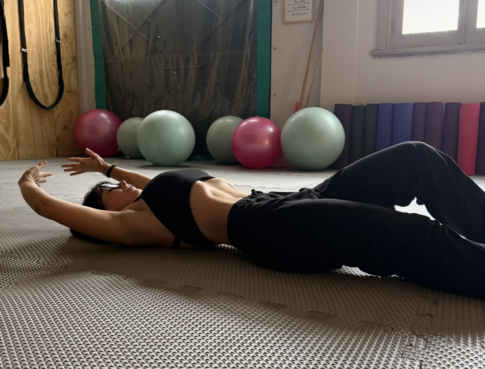
Reeducación postural y respiración en apnea para activar la faja abdominal profunda, proteger el suelo pélvico y reducir el perímetro de cintura de forma saludable.
Portal Alumnas HipopresivosFlexibilidad & Canales Energéticos • Gastón Burgos
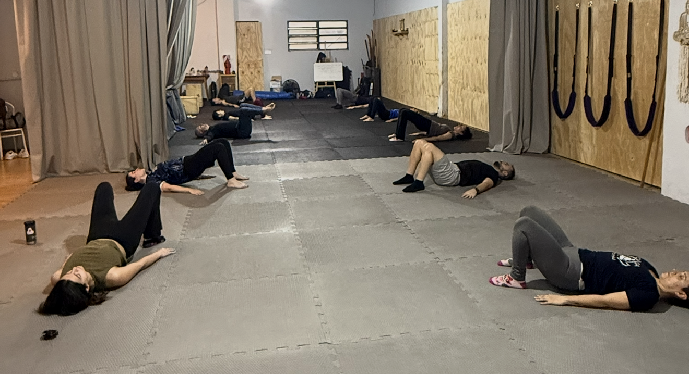
Estiramiento diagnóstico basado en la medicina tradicional oriental y la liberación fascial. Ideal para eliminar bloqueos musculares y recuperar la movilidad profunda.
Ingresar a Zen StretchingArte de la Salud • Prof. Alejandra Paz
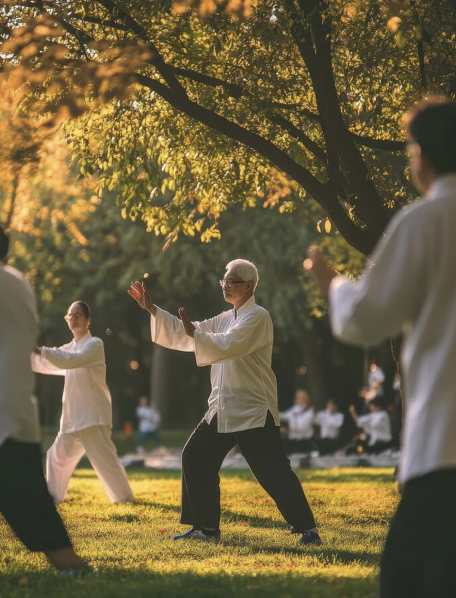
Gimnasia terapéutica china que coordina postura, respiración suave y concentración mental para equilibrar el flujo energético y fortalecer el sistema inmune.
Ingresar a QigongBujinkan Budo Taijutsu • Shihan Gastón Burgos
Enseñanza de las 9 escuelas tradicionales guerreras de Japón. Defensa personal real, acondicionamiento físico, temple mental y filosofía samurai.
Ingresar a Artes MarcialesDescompresión Articular • Profe Belén González
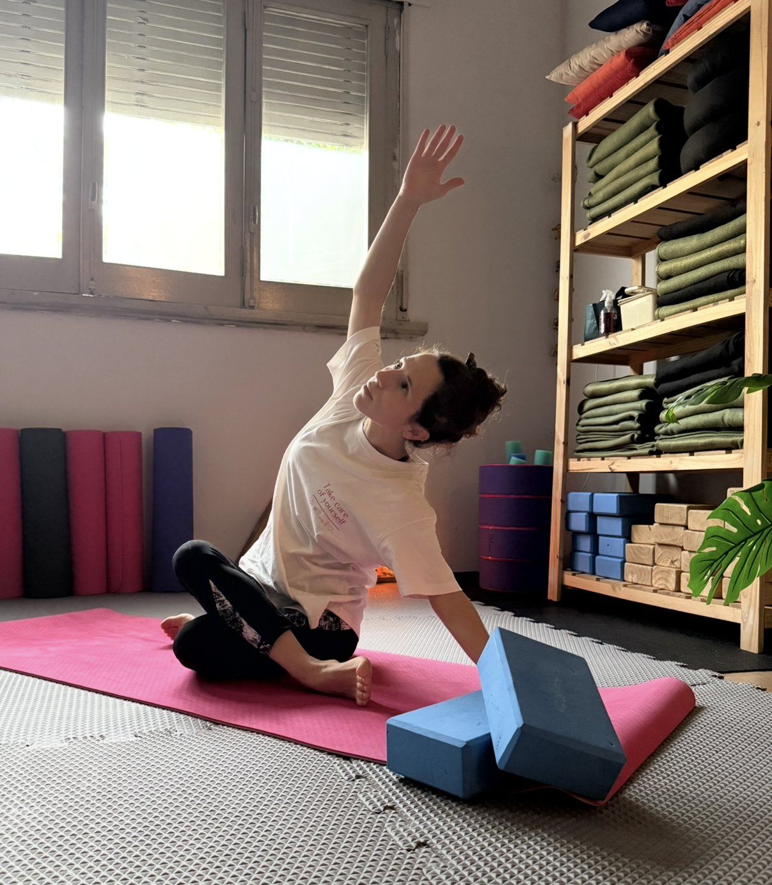
Espacio dedicado al estiramiento muscular integral, liberación de la columna y ganancia de flexibilidad mediante técnicas suaves y progresivas.
Ingresar a INYO StretchingAcompañamiento Espiritual • Ignacio Digas
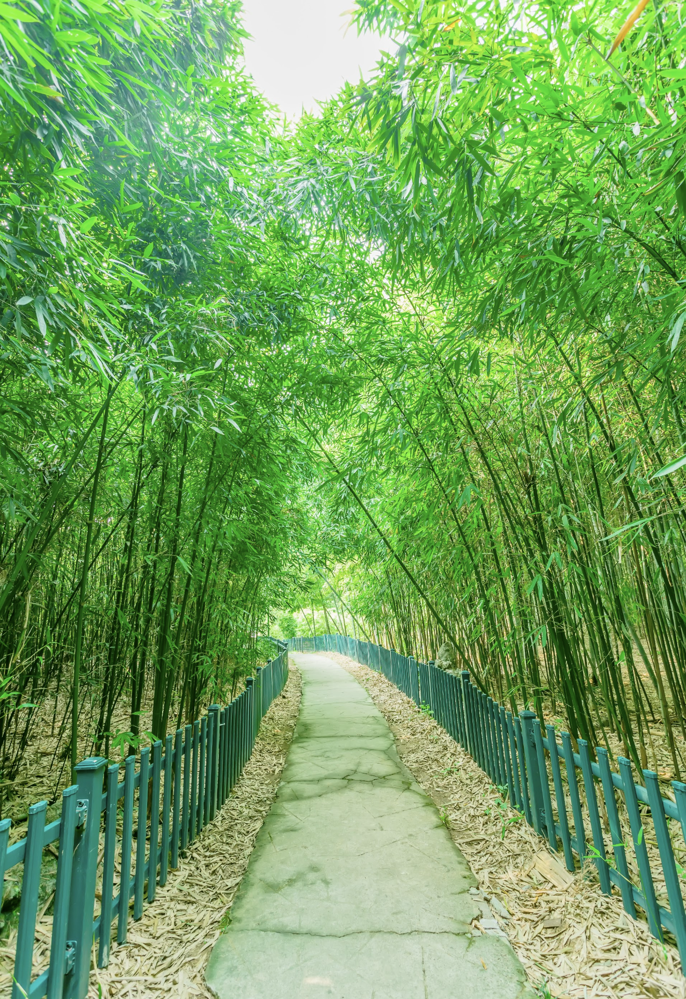
Encuentros individuales de limpieza energética, alineación de centros sutiles y conexión con la sabiduría ancestral. Gestión manual de turnos.
Ver Turnos de ChamanismoDesarrollo Personal & Planificación • Gastón Burgos
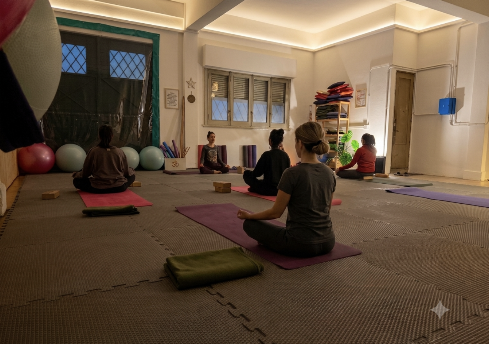
Sesiones virtuales enfocadas en el cumplimiento de objetivos físicos, hábitos saludables, mentalidad de entrenamiento y planificación estratégica personalizada.
Ingresar a Coaching OnlineInscripciones & Sesiones • Sistema Tradicional
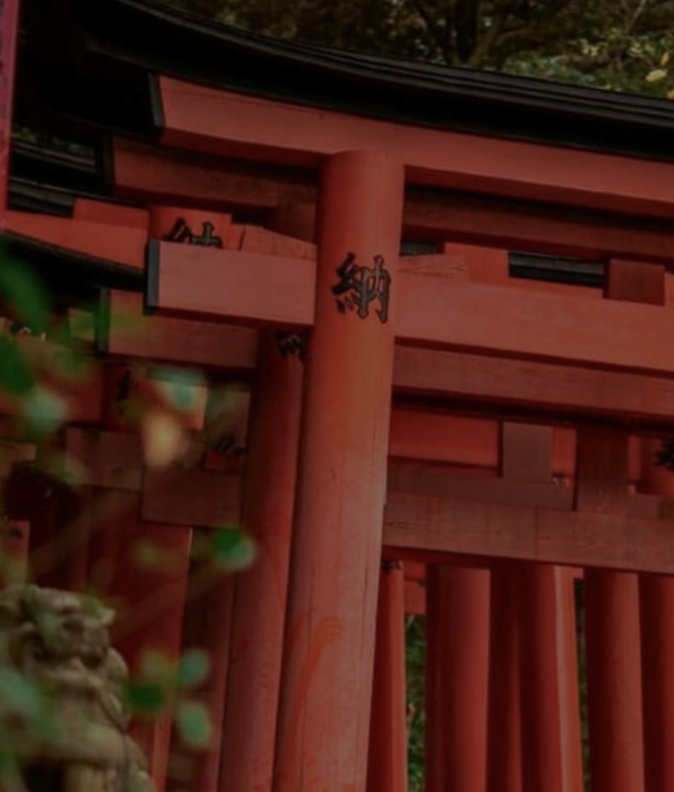
Método tradicional japonés de imposición de manos para canalizar energía vital universal, reducir estados de estrés y promover la autosanación natural.
Inscripciones a Reiki RyōhōVibración & Relajación Profunda
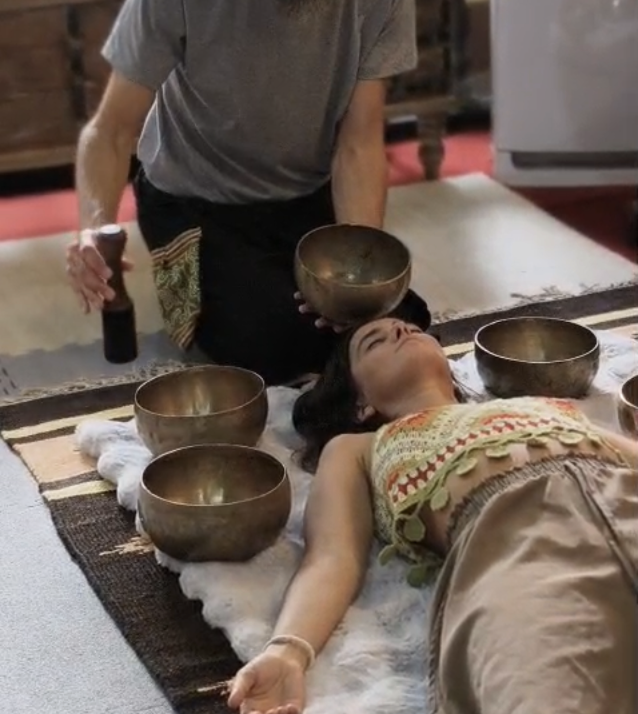
Experiencia de baño sonoro donde la frecuencia e intensidad de las armónicas facilitan estados meditativos profundos y descompresión del sistema nervioso.
Ingresar a Cuencos TibetanosEquilibrio & Tratamientos Terapéuticos
Estimulación fina de meridianos energéticos para tratar dolencias crónicas, regular el equilibrio orgánico y acelerar la recuperación física e interna.
Ingresar a AcupunturaTestimonios verificados en Google Maps organizados por las actividades de Espacio INYO.
"La sesión de Shiatsu con Gastón es una experiencia sanadora profunda. Súper profesional, alivia la tensión muscular acumulada y te renueva por completo."
"Excelente espacio. El Zen Stretching combinado con el masaje Shiatsu me ayudó a recuperar la movilidad articular y corregir la postura corporal."
"Recomiendo 100% Espacio INYO. Trabajo consciente, ambiente sereno y la dedicación del instructor es impecable."
"Un espacio de paz absoluta. La sesión de Reiki transmite serenidad, alivio mental e integración desde la primera sesión."
"Excelente atención y cuidado energético. Realmente un lugar donde el bienestar integral es la prioridad."
"Trabajo personalizado y corrección técnica constante. Las clases rinden al máximo sin riesgo de lesiones."
"Ambiente de superación y respeto único. Gastón te guía con profesionalismo valorando tus posibilidades reales."
"Súper recomendable. La combinación de HIIT y Calistenia te cambia la energía y la postura corporal rápidamente."
Membresía Exclusiva Ecosistema
Acceso integral mensual a clases de Yoga, Calistenia, Zen Stretching y Artes Marciales con Gastón Burgos y Belén González.